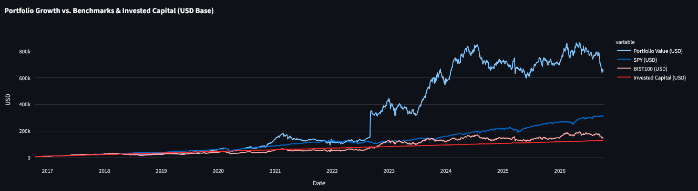
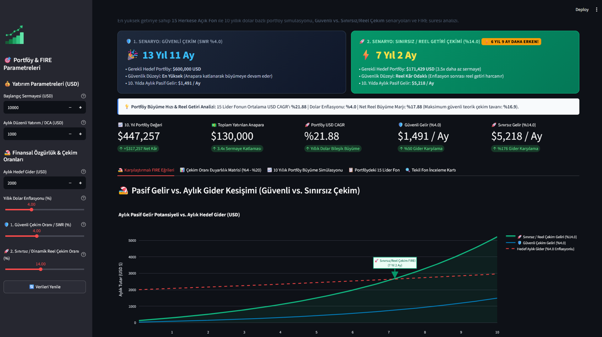
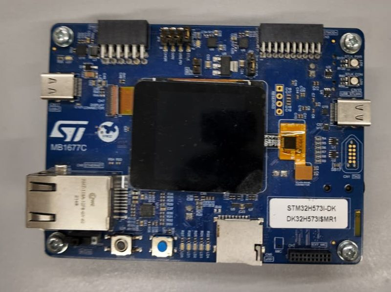

Yaşar University
İzmir, TürkiyeB.Sc. in Electrical and Electronics Engineering, 4th-year student
Electrical and electronics engineering student who writes firmware for STM32 and builds Python tools for investing.
led_green: 1500 ms on, 200 ms off, scheduled from SysTick without blocking delaysI am a 4th-year Electrical and Electronics Engineering student at Yaşar University in İzmir. My internship focused on STM32 microcontrollers: configuring peripherals in STM32CubeMX, writing C with the HAL and debugging on the board. Outside of engineering I build backtesting and portfolio tools in Python, because I like questions that can be answered with data.
B.Sc. in Electrical and Electronics Engineering, 4th-year student
R&D Intern, Embedded Systems · İzmir
HAL_GetTick().Python · pandas · Streamlit · Plotly · yfinance · PyInstaller
Simulates a long-term dividend portfolio on Borsa Istanbul from 2006 to 2026 with annual rebalancing and monthly contributions. Each year the engine looks only at trailing data, so there is no look-ahead bias. A Markov-state model drops a stock when it skips a dividend and re-admits it after a trust period; weights come from 10-year CAGR. Results are reported in USD with XIRR, Sharpe, Sortino and maximum drawdown.


Python · Streamlit · pandas · Plotly · pyTEFAS
Pulls Turkish mutual fund data from TEFAS, converts returns to USD and ranks funds by CAGR. A planner estimates the capital needed for financial independence at different withdrawal rates and inflation assumptions, and compares a conservative and an aggressive scenario.

Python · asyncio · pandas · NumPy
An event loop split into data, strategy, risk and execution modules. Signals combine EMA, RSI and ADX and are recalculated on each new bar. Position size scales with realized volatility, and a trailing stop is checked on every tick.
C · STM32 HAL · STM32CubeIDE
Built with two fellow interns during my internship. A small driver module where each LED is an object with its own on and off period. A state machine compares the current tick with the last switch time, so several LEDs blink at different rates from one main loop without HAL_Delay().

The fastest way to reach me is email: aksucem283@gmail.com